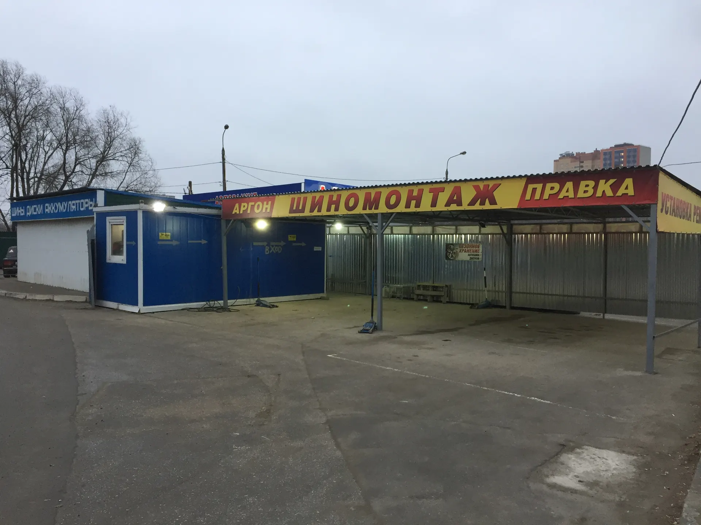
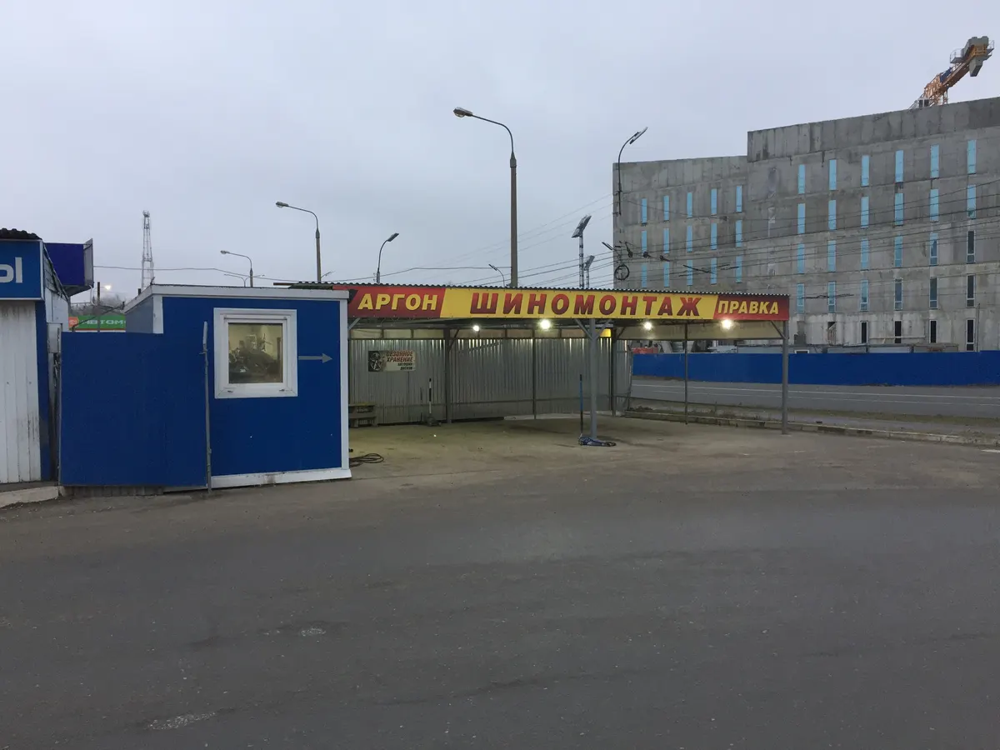
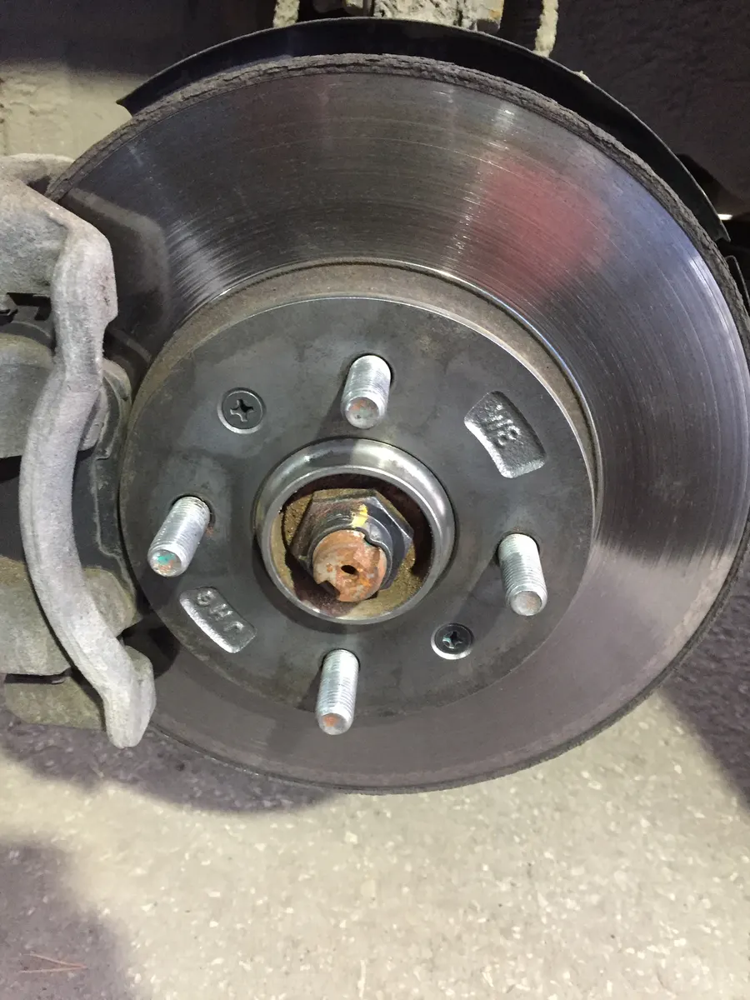
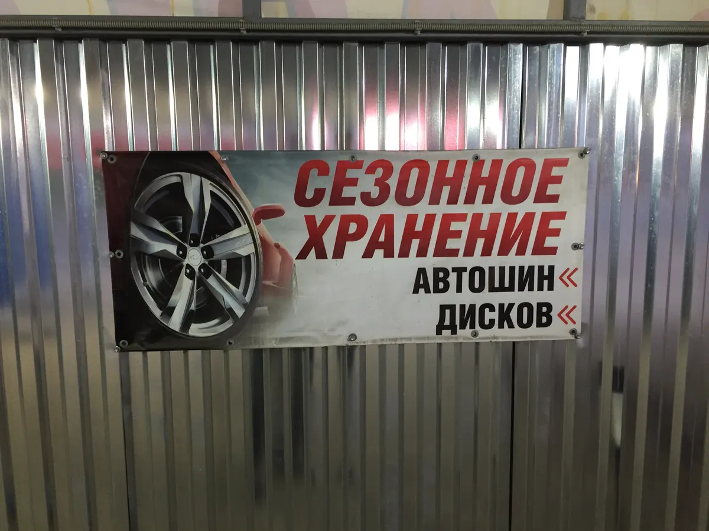

Шиномонтаж · Рязань · Спортивная, 12А
Шиномонтаж в Рязани без очереди – к своему времени
Записываетесь заранее и приезжаете к своему окну. Переобувка, балансировка, правка и алмазная проточка дисков.
- Предварительная запись – без очереди в сезон
- Правка, прокатка, проточка и покраска дисков
- Оплата картой, СБП или наличными

Цены
Переобувка зависит от радиуса и типа колеса. Точную цену назовём при записи.
Шиномонтаж
- Переобуть все колёсаот радиуса и типа колесаот 1 000 ₽
- Балансировкауточнить
- Ремонт прокола, вулканизацияуточнить
- Установка ремонтных шиповуточнить
- Сезонное хранение шин и дисковуточнить
Диски
- Правка и прокатка дисковуточнить
- Алмазная проточкауточнить
- Порошковая покраскауточнить
- Сварка аргономуточнить
Зимние шины в наличии
- Tracmax X-Privilo S500 215/65 R16шипованные7 330 ₽
- Yokohama iceGuard Stud iG55 205/70 R15шипованные8 470 ₽
- Pirelli Ice Zero FR 205/50 R1713 010 ₽
Наличие шин и цены уточняйте при записи – подберём размер под ваши диски.
Как проходит
- 01
Записались на удобное время
Онлайн на сайте или в WhatsApp.
- 02
Приехали – машину ставят на переобувку
Без живой очереди в сезон.
- 03
Перебортовка и балансировка
Если диск гнутый – правим на месте.
- 04
Затяжка по моменту
Динамометрическим ключом. Оплата картой, СБП или наличными.



Что обещаем
Приезжаете к своему времени
По предварительной записи – без ожидания в очереди.
Чистим ступицы и шпильки
Перед тем как поставить колесо обратно.
Затяжка по моменту
Болты и шпильки протягиваем динамометрическим ключом – с правильным усилием, а не «от души».
Гарантия на работы
Если что-то не так после нас – приезжайте, разберёмся.
Отзывы с Яндекс.Карт
«Уже много лет наша семья по вопросу шиномонтажа обращается именно в Шин Профи. Удобно, качественно, быстро. Хорошее оборудование, вежливые мастера, приятное руководство, предварительная запись. Однозначно рекомендуем. Анатолий - просто красавчик, профессионал с большой буквы.»
Центр-Тур · 31 марта
«хорошо всё делают, быстро. В сезон замены позвонил, записался, приехал ко времени за 10 мин, сразу поставили на переобувку, что осенью так было, что весной, рекомендую отличный шиномонтаж. Ещё и диски поправят если это необходимо будет.»
MAHDAT · 13 мая 2025
«Сделали алмазную проточку дисков, по времени сделали быстренько, а результат как будто машина только с салона»
илья ярохин · 21 мая 2025
Отзывы с карточки на Яндекс.Картах, без правок.
Частые вопросы
Можно приехать без записи?
Можно, но в сезон лучше записаться: по записи приезжаете к своему времени.
Правите литые диски?
Да: правка, прокатка, алмазная проточка, порошковая покраска и сварка аргоном.
Можно оставить шины на хранение?
Да, храним шины и диски до следующего сезона.
Как оплатить?
Наличными, картой, по СБП или QR-коду.
Запишитесь к своему времени
- Адрес
- Спортивная ул., 12А, Рязань
- Часы
- Каждый день 08:00–20:00
- Телефон
- +7 (910) 502-90-33